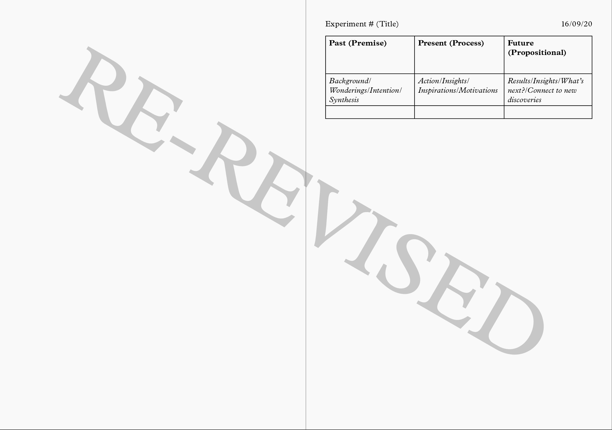

What is an "Experiment-logue"?
It is an archive of design experiments and projects. These typographic experiments act as brief performances of design practice, and from observing and reflecting upon the different stages of making (before, during and after), I am able to identify reoccurring themes and motifs in my practice.
It is one half of an exegetical work, the other being a print publication that is intended for the reader to DIT (do it themselves), meaning to print, annotate, decorate and bind.
If you'd like to DIY a publication then contact me here.

The name experiment-logue came from Donald Schön's theory of the designer as a reflective practitioner who converses with a 'situation', in order make sense of complex ideas and problems.

The website contains the details from an experiment log that I kept throughout this project. This log captures the theoretical ad visual references that inform the experiments, as well as the reflective thinking through the design process (the past, present and future of designing).